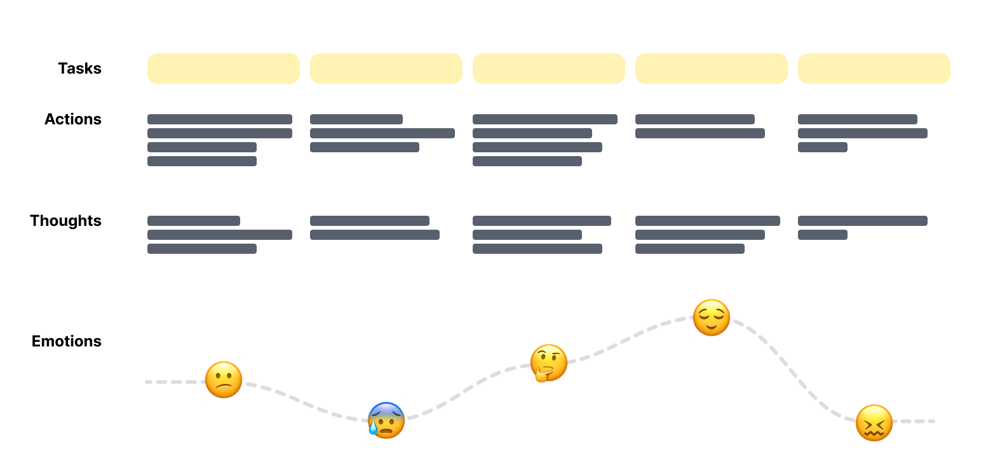
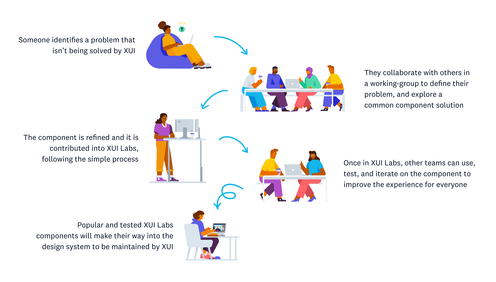
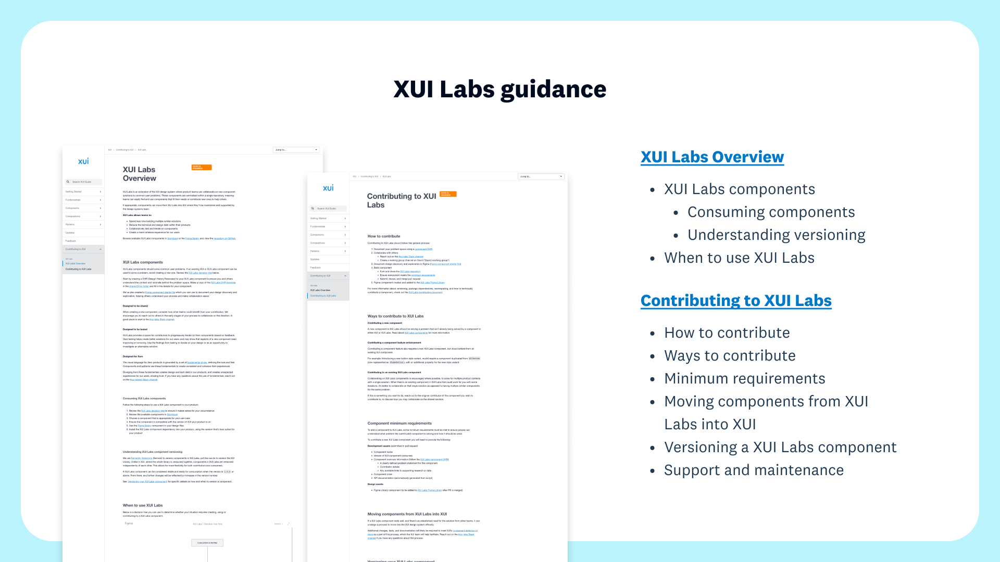
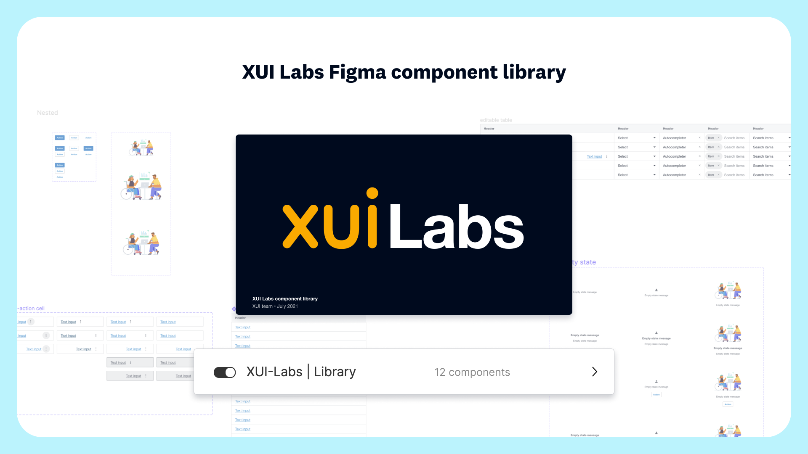
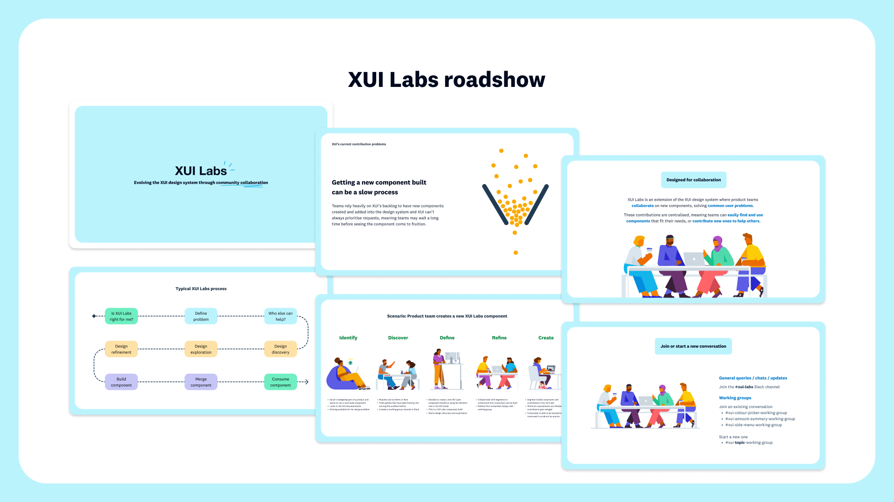

Home
XUI Labs
A collaborative space for easily creating and sharing new components that solve common problems.
In a nutshell
XUI Labs is an extension of the XUI (Xero User Interface) design system. It enables Xero product teams to collaborate on new component ideas and contribute them into a shared space. In this space, components can be easily tested and iterated on before they make their way into the design system officially.
Improving XUI's contribution and collaboration model was one of my primary responsibilities in the team, with XUI Labs being a key output.
A solvable riddle
Through a synthesis of multiple generative research projects, we uncovered 3 main problems:
-
Getting a new component built can be a slow process
Product teams typically have to wait for XUI to prioritise and create new components before they're added into the design system.
-
Contribution can take time and requires additional effort
XUI intentionally has a high bar for component quality. Contributions from teams can take a lot of time and effort as they may not have the capability, capacity, or dedicated time to finish them.
-
Lack of visibility and share-ability between teams
Teams don’t have an easy way to see or use components other teams have made in their products. This results in multiple bespoke solutions being made to solve the same problems, meaning duplicated effort/cost and the creation of technical debt.
Out of these problems, we saw an opportunity to feed a few birds with one collaborative experimental component space (or scone)...
Dare to dream
The goal was to make traditionally bespoke components easier to share, but in a way that felt approachable for product teams, and didn't rely on XUI to monitor the quality to such a high degree.
If we could acheive this, we would help unblock teams, and reduce duplicated effort, resulting in more cohesive, predictable, and trustworthy user experiences for customers.
By running journey mapping exercises, interviews with designers and engineers, and undergoing technical investigations, we were able to refine this opportunity idea into a rock solid hypothesis. The hypothesis was used as a backbone for the entire approach going forward.
The approach
So we understood our problem space, and had a vision for what it should look like, but how could we get there?
Planning
Our service design blueprint fed from our journey maps helped us outline the scope for the core pieces needed to incept XUI Labs. We needed:
- A git repository and pipeline to house and release components created into a shared space
- Guidance documentation to successfully onboard and direct people through the contribution process
- Tools, templates, and designated support processes to help people contribute
We then undertook both technical and documentation investigations to provide more details on the specifics of what we would be needing to create.
Iteration
We drafted our guidance and spent time reaching out to product teams to understand which parts made sense and which needed further development. Listening to people also helped us develop the overall XUI Labs service design. We saw opportunities to fill gaps with additional guidance and tools as well as rejig parts of the process to make it clearer and easier to use.
Beta testing
In order to trial the XUI Labs contribution workflow, we ran a beta testing period with a number of interested teams that already had bespoke components made, or ideas for new components ready to collaborate on or contribute.
We took on direct feedback from the beta testers through a workshop, which we used to finalise the XUI Labs process before orchestrating our official release communications.
Release and comms
We wanted to capitalise on the excitement of a fundamentally new process and run a set of online roadshow-style sessions, taking designers and engineers through what XUI Labs was, why it existed, and how to start contributing.
The sessions were successful in how we were able to answer burning questions and give people the confidence to start thinking about using XUI Labs.
Bits and pieces
Below are some specific pieces of the XUI Labs project I worked on that helped tie everything together.
Guidance
The guidance I wrote and added to our internal XUI documentation site was a key part of the XUI Labs service offering, helping lead people down the right paths and enable them to feel confident along the way.
Interactive decision tree
This decision tree was created as a way to service frequently asked questions around whether XUI Labs was the right for a product team. By providing clear pathways to navigate, people could feel more confident in their decisions.

Figma library
To support teams in creating functional visual assets for their product designs, I created a Figma library with templates for building and sharing components.
Roadshow comms
Mentioned above, the online online roadshow sessions bridged the gap between releasing XUI Labs and actually getting teams involved in contributing to it.
Some things I learnt
-
No amount of documentation will solve collaboration and contribution growing pains
These are cultural problems to work on. Practice, encouragement, and support (hands on or off) are tools, along with documentation, help build confidence.
-
The best way to test a new service is to get people using it
Service blueprints only get you so far with hypothetical scenarios. To understand what will work or not, real users are the key.
-
Facilitating edge cases is tricky
With any service, there're going to be people or teams that fall outside the main journey identified. Having a plan for handling these cases is vital for keeping conversations productive for everyone.